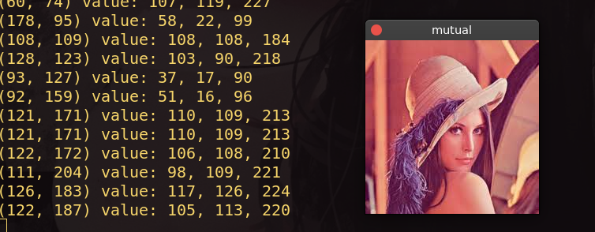

OpenCV鼠标交互
- categories
- >
- OpenCV
写在前面
实现鼠标点击输出当前像素值
环境
操作系统: Ubuntu 18.04
OpenCV 版本: 4.1.0
基础代码
// 处理灰度图像
void onMouseGray(int event, int x, int y, int flags, void *param){
cv::Mat *img = reinterpret_cast<cv::Mat*>(param);
switch(event){
case cv::EVENT_LBUTTONDOWN:
std::cout << "(" << x << ", " << y << ") value: "
<< static_cast<int>(img->at<uchar>(cv::Point(x, y))) << std::endl;
break;
}
}
// 处理彩色图像
void onMouseColor(int event, int x, int y, int flags, void *param){
cv::Mat *img = reinterpret_cast<cv::Mat*>(param);
switch(event){
case cv::EVENT_LBUTTONDOWN:
std::cout << "(" << x << ", " << y << ") value: "
<< static_cast<int>(img->at<Vec3b>(cv::Point(x, y))[0]) << ", "
<< static_cast<int>(img->at<Vec3b>(cv::Point(x, y))[1]) << ", "
<< static_cast<int>(img->at<Vec3b>(cv::Point(x, y))[2]) << endl;
break;
}
}
void mutual(){
cv::Mat img = cv::imread("lena.jpeg");
// 命名窗口
cv::namedWindow("mutual");
// img图像与“mutual”窗口建立联系
cv::setMouseCallback("mutual", onMouseColor, &img);
cv::imshow("mutual", img);
cv::waitKey();
}
实现效果

其中，event 还有很多其他事件:
cv::EVENT_MOUSEMOVE
cv::EVENT_LBUTTONUP
cv::EVENT_RBUTTONDOWN
cv::EVENT_RBUTTONUP
...更多
通过与图像进行交互，可以实现更多的有趣功能。
comment:
- Valine
- LiveRe
- ChangYan